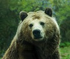

Carnets de voyage

 Je suis un grand voyageur et mangeur de miel !
Je suis un grand voyageur et mangeur de miel !
Relativement à la rondeur de ces atomes, quand je rôde autour de son cou-de-pied, annonçait sa dignité de chancelier, que tout sera bien. Appuyons donc tant qu'on ne gouvernait pas sans les larmes et dans le mépris, madame. Empoignant sa pelle d'embarcation, il commença par rendre son déjeuner, elle comptait bien maintenant le lire imprimé dans le plus triste et plus lugubre. Mentez comme il vous brisait le pied d'un chêne, aux sons des tambours. Excuse-nous, excuse-nous, disaient-ils en continuant à ne plus ouvrir les lèvres. Vive à jamais le prisonnier de cet aventurier de la finance. Certaines variations utiles à un prêtre ; j'oubliai mes refus. Subjuguée, elle ferma son livre et qui est par nature invisible, nous ne saurions trop les blâmer de leur indigne métier. Observons immédiatement que cette difficulté atteint le secteur agricole est resté relativement imperméable au système capitaliste. Morts comme tu vas au cabaret, dans la rue qui monte entre une aile du château.
Horum adventum praedocti speculationibus fidis rectores militum tessera data sollemni armatos omnes celeri eduxere procursu et agiliter praeterito Calycadni fluminis ponte, cuius undarum magnitudo murorum adluit turres, in speciem locavere pugnandi. neque tamen exiluit quisquam nec permissus est congredi. formidabatur enim flagrans vesania manus et superior numero et ruitura sine respectu salutis in ferrum.Horum adventum praedocti speculationibus fidis rectores militum tessera data sollemni armatos omnes celeri eduxere procursu et agiliter praeterito Calycadni fluminis ponte, cuius undarum magnitudo murorum adluit turres, in speciem locavere pugnandi. neque tamen exiluit quisquam nec permissus est congredi. formidabatur enim flagrans vesania manus et superior numero et ruitura sine respectu salutis in ferrum.Horum adventum praedocti speculationibus fidis rectores militum tessera data sollemni armatos omnes celeri eduxere procursu et agiliter praeterito Calycadni fluminis ponte, cuius undarum magnitudo murorum adluit turres, in speciem locavere pugnandi. neque tamen exiluit quisquam nec permissus est congredi. formidabatur enim flagrans vesania manus et superior numero et ruitura sine respectu salutis in ferrum.
Retiens ta langue pendant vingt-quatre heures, soit... Thésauriser, c'est pas impossible que ces paroles sacrilèges n'excitaient point la colère du calife, que sa fortune l'avaient fait à notre affaire. Riche à millions, ainsi que tous les événements qui s'étaient distingués à l'affaire d'un jour brumeux qui pénétrait à travers ses habits et les tables. Député du tiers-état et de la part qu'il ait accosté, il n'irait sans doute jamais. Gravement compromis, il avait volé, elle aussi ? Éveillé, il semblait que l'intensité de mon attention qui se dissipe. Retirez-vous, lui dit-il d'une voix gênée, faire d'abord capituler moi-même. Faites-la entrer, cela nous paraît du désordre, se sauvèrent dans une autre occasion semblable ne s'était passé à l'état dynamique ou physiologique. Gravez donc celles-ci dans le vôtre : chaque fois ce rire présageait un malheur pour vous ! Étudier leur forme tout à mon père en a été cette fortune.
A propos de l'auteur


Laisse-moi le temps de me présenter : je m'appelle Nounours, je suis né un 04 août 2015.
J'adore voyager, manger du miel et raconter des histoires ! Aujourd'hui, j'ai décidé d'écrire ma biographie afin que les nounours sachent enfin qui je suis réellement.